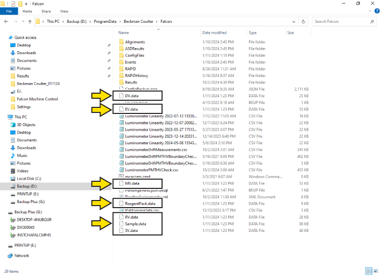

This topic includes information about how to delete the instrument's data files.
You may need to complete this process if
The Instrument fails to initialize for an otherwise unknown reason.
The Instrument exhibits vessel-on-vessel events because the Instrument does not recognize the locations of passengers.
The Instrument does not recognize the locations and statuses of the reagent packs.
Note: This procedure involves risk and should only be completed under the supervision of a regional (L2)-level field service engineer or above, and only as a last resort. You might corrupt data in the database. You must shutdown Machine Control and Common Console.
Deleting data files as a last resort for repeated vessel issues
The DV, EV, MV, RV, and SV data files should be deleted together as a group because deleting only one type of data may cause problems.
Before you delete vessel
.data files, you should first remove and discard all vessel passengers from slots on wheels, carriages, the luminometer, and collets.
Deleting data files as a last resort for repeated sample issues
Only delete the
sample.data file when directed to do so by a level 2 (L2) field service engineer (FSE).
Deleting data files as a last resort for repeated reagent pack issues
The system cannot detect fluid levels inside the reagent packs. Therefore, do not delete the
ReagentPack.data file unless absolutely necessary.
If you must delete the
ReagentPack.data file, before you delete the file, you must open the reagent storage module (RSM) and remove all reagent packs.
Note: Do not remove reagent packs via the loader; if you do so, you risk leaving a straggler behind.
You must discard all punctured reagent packs.
After you delete the
ReagentPack.data file, use the RSM loader to reload any unused reagent packs that you removed. If the system will not accept a reagent pack, that pack is likely associated with the initial failure.
Deleting Data Files
Before you select which files to delete, be sure to read the considerations for deleting data files. See
Considerations for Deleting Data Files for more information.
If you are signed in and using the LabUser account, you must sign in to use the BeckmanAdmin account instead. You must not allow the Machine Control App and Console App to open. When you see those program icons appear in the Windows Taskbar, immediately right-click each icon and select
Close window.
If you are already signed in and using the BeckmanAdmin account, you must close the Machine Control App and Console App using the safe shutdown procedure:
In the Console App go to
MENU > Tools > Diagnostics > Nonintrusive Diagnostics > Safe Shutdown
After you receive the notification that the Machine Control App has closed, right-click the Console App icon in the Windows Taskbar and select
Close window.
Go to
D:\ProgramData\Beckman Coulter\Falcon and delete the following files:
DV.data
EV.data
MV.data
ReagentPack.data
RV.data
Sample.data
SV.data
Figure 507: Data Files

Open the Machine Control App and the Console App.
Initialize the instrument to a
GREEN (Ready) status. When you initialize, be sure to select all of the following options.
After the Instrument has initialized to a
GREEN (Ready) status, confirm that new versions of the following files have been created inD:\ProgramData\Beckman Coulter\Falcon.